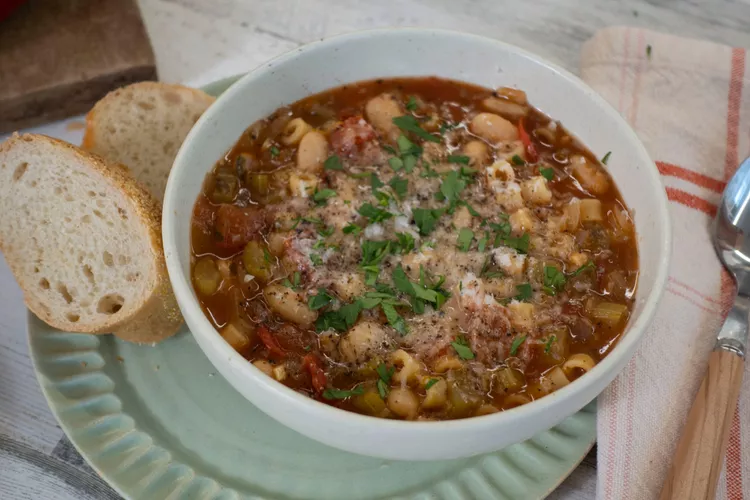

Pasta Fagioli

How to make Pasta Fagioli
Pasta fagioli (or pasta e fagioli), which means "pasta and beans," is a
traditional Italian soup. It consists of small noodles (such as ditalini
or macaroni) and cannellini beans in a seasoned tomato broth.
Ingredients
- Oil
- Vegetables
- Seasonings and herbs
- Broth
- Tomatoes
- Pasta
Steps
-
Heat olive oil in a large saucepan over medium heat. Add onion, celery,
garlic, parsley, Italian seasoning, pepper flakes, and salt; cook and
stir until onion is translucent, about 5 minutes. Stir in chicken broth,
tomato sauce, and tomatoes. Reduce the heat to low and simmer for 15 to
20 minutes.
- Add pasta and cook until tender, about 10 minutes.
-
Stir in undrained beans and cook until heated through, 3 to 4 minutes.